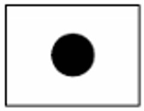
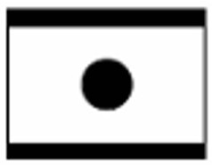
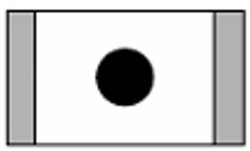
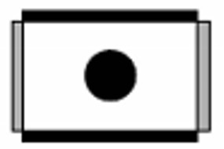
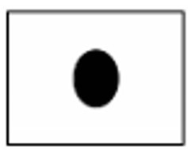
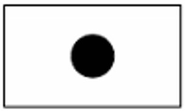
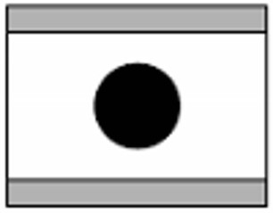
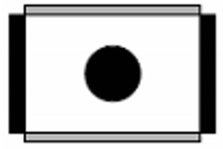
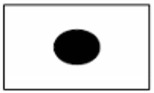

本文档提供了测试机顶盒输出模式的基本方法
播放16:9频道 一般来说，高清节目都是16:9的码流 推荐码流：706 Sky News Emley Moor TS 18096267bps.mpg（4+1、Sky Three、Sky new）
| 码流长宽比例 | 机顶盒设置长宽比例 | 机顶盒输出模式 | 效果图 | 说明 |
|
16:9 |
16:9 |
任意 |
 | 不论机顶盒如何设置，都显示为原始画面长宽比（16:9），且画面充满屏幕、无切割、不变形 |
|
4:3 |
Letter Box |
 | 画面上下有黑边出现，但显示完整（无切割）、不变形 | |
Pan Scan |
 | 画面被填满、不变形，但不完整（左右被切割） | ||
Combined |
 | 画面既有黑边出现也不完整（被切割），但不变形。项目中较少有这个选项 | ||
Auto |
 | 画面没有黑边也没有被切割，但被拉伸（变形） |
播放4:3频道 一般来说，标清节目都是4:3的码流 推荐码流：706 Sky News Emley Moor TS 18096267bps.mpg（UKTV History、Sky spts news）
| 码流长宽比例 | 机顶盒设置长宽比例 | 机顶盒输出模式 | 效果图 | 说明 |
|
4:3 |
4:3 |
任意 |
 | 不论机顶盒如何设置，都显示为原始画面长宽比（4:3），且画面充满屏幕、无切割 |
|
16:9 |
Letter Box |
画面左右有黑边出现，但显示完整（无切割）、不变形 | ||
Pan Scan |
 | 画面被填满、不变形，但不完整（上下被切割） | ||
Combined |
 | 画面既有黑边出现也不完整（被切割），但不变形。项目中较少有这个选项 | ||
Auto |
 | 画面没有黑边也没有被切割，但被拉伸（变形） |
| # | 发布日期 | 版本 | 更新内容 | 作者 | 审核 |
| 1 | 2014年06月23日 | V1.0 | 根据平时测试经验整理 | 林晓州 | 郑嘉惠、周厚秋、周宇锋 |
| 2 | 2015年11月23日 | V2.0 | 转入网站管理 | 林晓州 | —— |
OneLib智库 · 分享知识和经验，打造精品个人智库平台
Designed By 林晓州
qq： 1139904786
邮箱： 1139904786@qq.com
网址： http://www.onelib.biz
©2015 · OneLib智库